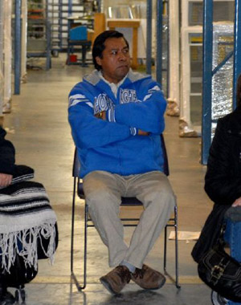

The Spark We Need - The Chicago Sit-Down Strike
Submitted on Tue, 12/09/2008 - 3:52am
By Daniel Gross - Counterpunch, December 8, 2008.

The corporations got sloppy. From the hedge-fund parasites to the housing market fraudsters, the corporate criminals have shown their hand. Their filthy fingerprints are all over the economic pain blanketing the country and the world.
To add insult to injury, the corporate agents in government, also known as politicians, are looting incomprehensible billions of dollars to turn over to the fat-cat executives.
Working families have long known the pain of stagnant wages, steep rents, and unaffordable heath care and education in the United States. But there’s no doubt that this recession has squeezed the vise beyond what many of us have seen in our lifetimes.
What’s invigorating and critically important though is the rising awareness that corporations are to blame for the current calamity, and that this crisis is not merely, “a force of nature.” Working people across the country are pointing the blame where it belongs. The elites understand this rising public awareness of corporate wrongdoing as well. How else to explain President George W. Bush feeling obligated to give a speech last month in New York defending capitalism itself?
According to this year’s Gallup survey on opinions toward 25 business sectors, all but one sector (sports) suffered a decline in esteem. The real estate industry suffered the greatest decline in positive ratings for any industry in the history of the poll. Only 16% of those questioned had a positive view of the real estate business. Banking also suffered a precipitous drop from 50% rating it positively last year to just 36% giving a favorable nod this year.
The combination of economic pain and rising awareness of corporate culpability has created a tremendous opportunity for workplace and community organizers interested in transformational change. This is our time: time to step up the intensity of our outreach and organizing around demands which challenge the dominance of the corporations in our lives.
The incredible power of the multi-national corporations is the fundamental driver of misery in our world today from rampant poverty and environmental degradation to mass incarceration and war. Real change, that is change which necessarily involves a direct conflict with corporate power, has not and will not come from politicians, “socially responsible” corporations, or trade union bureaucrats. Authentic change has come and will continue to come from the rank and file, the grassroots.
No surprise then that such a bold stroke for justice has come from workers in one of the great rank and file-centered unions, the United Electrical, Radio and Machine Workers of America (UE).
Some 200 UE members at Republic Windows and Doors in Chicago have sat-down and occupied their plant until they win the compensation they are owed. The peaceful occupation began Friday on the last day of the plant’s scheduled operations before closure.
Republic reportedly failed to comply with notification rules for mass layoffs and skipped a meeting with a member of Congress to discuss the workers’ predicament. The union says bailed out Bank of America is to blame for freezing Republic’s line of credit and keeping it from paying owed severance and vacation pay.
Ron Bender, a striker with 14 years at the company, put it poignantly to the AFP news wire: “We're doing this for the other working people in the country.”
Amen. The UE strikers occupying their plant are sending a message to all workers that the corporations care nothing for your life and the lives of your family members. They will come for your job at some point either to take it away from you or to degrade it. But with organizing and action we can fight back and win.
Direct action, undertaken by the grassroots, will only increase as the recession continues and government unaccountability becomes more and more obvious. (Look at the marvelous efforts of the young people in California who recently used civil disobedience to disrupt the Northern California headquarters of U.S. Immigration and Customs Enforcement (ICE) in response to horrifying immigration raids).
The first recorded sit-down strike was conducted by members of the Industrial Workers of the World in 1906 at a General Electric plant in New York. The tactic shot to lasting fame with the great UAW automobile workers’ sit-ins in 1930s Michigan. While there have been labor sit-ins in the United States since then (civil rights sit-ins in the 50’s and 60’s were frequent and effective), they have not been a prominent tactic in our labor movement for decades.
The action of these strikers is profound. By occupying their plant and refusing to be swept under the rug, the workers have both deployed an effective tool to reclaim their money and challenged the sacredness of corporate property. They have set an example for all of us to bring back to our workplaces and communities.
In the Industrial Workers of the World, we have a saying: “You’re in there for us, we’re out here for you.” It’s used to encourage solidarity for unionists who have been imprisoned for defending their class. It strikes me that as the UE workers continue their action, the same concept is applicable. Those of us outside the Republic factory should be there for these workers who are taking action on behalf of us all. Heartening early signs indicate that solidarity has thus far been robust.
Of course, the right-wing will condemn the workers’ actions; in my recurring nightmare one of their off-the-wall pundits compares this dignified, peaceful action to the recent wave of high-seas piracy.
The liberals will express sympathy for the workers’ plight but too many will disagree with the means employed, i.e., using direct action vs. having a candle-light vigil or sending letters to Congress.
By contrast, I’m betting that multitudes of rank and file workers will express solidarity with both the workers’ cause and the means they chose to vindicate their rights; full, unequivocal solidarity.
To help out, please log on to www.ueunion.org for details on how to provide financial and moral support to the strikers today. Next, I imagine if victory is not achieved quickly, the union may call on supporters to take peaceful yet assertive actions at Bank of America branches across the country. Local groups and coalitions might want to start researching and planning actions should the UE strikers call on us to escalate pressure. Finally, it looks like the workers are now contesting the very closing of the plant and maybe they’ll even seek to run the plant themselves without bosses, both moves which will require a long-term and steady commitment of solidarity from supporters.
As big business indulges us with more sleepless nights worrying about how bills will be paid and the government steals more of our money, let’s make the Republic sit-down strike the spark of energy we need to begin liberating our lives from corporate dominance for good.
Daniel Gross is an organizer with the Industrial Workers of the World and the author with Staughton Lynd of the recently released, Labor Law for the Rank and Filer: Building Solidarity While Staying Clear of the Law (PM Press 2008). He can be reached at dgross (at) iww.org.